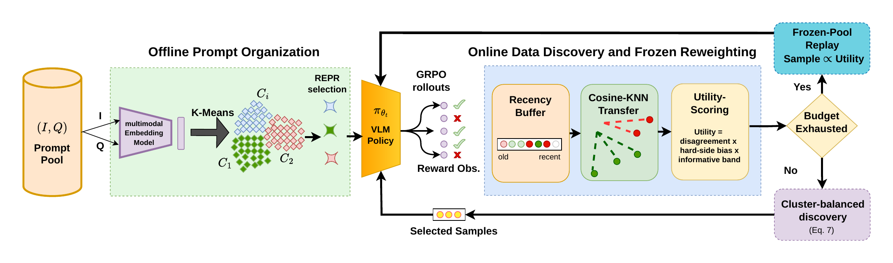

Recent advances in reinforcement learning have made verifiable rewards a central post-training paradigm for improving multimodal reasoning. However, methods such as GRPO remain data- and compute-inefficient, often spending rollout and annotation budget on prompts that provide little learning signal. We propose Discover, an online data-discovery framework for budgeted multimodal GRPO that enables vision-language models to dynamically identify prompts that are most useful for the current policy. Discover first organizes the multimodal sample pool into semantic clusters and queries a small set of density-diverse representative samples to obtain initial reward observations. During training, it estimates the utility of unannotated samples by transferring sparse reward feedback from queried samples. Since sample utility changes as the policy evolves, Discover dynamically updates these estimates with recency-weighted rollout observations. It then selects only high-utility prompts for annotation using a policy-conditioned score that accounts for reward variance and difficulty, and continues utility-based replay once the discovery budget is exhausted. Experiments on ViRL39K and VLAA-Thinking with Qwen3-VL-2B show that Discover substantially improves multimodal mathematical reasoning under a strict 10% unique-sample budget, outperforming budget-matched random selection, hard-example sampling, full-pool GRPO under the same training-step budget, and online selection baselines. Ablations further validate the importance of semantic coverage, online reward transfer, and stable discovery cadence, establishing Discover as a practical framework for data-efficient multimodal RL post-training.

Every image–question pair is embedded once with a frozen multimodal encoder. Spherical k-means then groups the pool into semantic clusters.
Each cluster gets a few central, density-diverse representatives (REPR). A similarity penalty keeps them apart. These are the only prompts spent on probing.
ViRL39K: K = 150 clusters × R = 3 probes = 1.16% of the poolEach REPR prompt gets G = 8 rollouts from the current policy. The verifier's rewards give an observed pass rate μ and disagreement v, which go into a recency-weighted buffer.
Every unqueried prompt borrows μ and v from its nearest observed neighbours in embedding space, weighted by cosine similarity. No extra rollouts and no selector network.
Each prompt is scored by predicted disagreement, tilted toward harder prompts, with solved or impossible ones zeroed out. The best prompts in each cluster are admitted for GRPO training, and their rollouts refresh the buffer.
Every method trains Qwen3-VL-2B with the same GRPO recipe and number of optimizer steps, and is evaluated on four multimodal math benchmarks. Budgeted methods differ only in which prompts they verify. With 10% of ViRL39K, Discover reaches a 13.12 average, compared with 10.38 for Random-10% and 9.71 for training on the full split. Across three ViRL39K training seeds it averages 13.25 ± 0.55, compared with 10.01 ± 0.54 for Random-10%. Only 1.16% of the pool is verified first for the selector (the REPR probes), and there is no full-pool scan.
Table 1. Training-first: % of source prompts first verified when admitted to GRPO. Selector-first: % first verified to seed or score the selector; REPR probes can later enter GRPO without new verification. Total: all verified prompts. Dense-scored baselines (Hard, MaxVar, VADE) scan the 90% training split, so they are not exposure-matched. Probe Gen.: selector-only generations as a multiple of pool size N. A dot marks the best value in each column. Single training run per row.
| Method | Seed I | Seed II | Seed III | Mean ± SD |
|---|---|---|---|---|
| Discover-10% | 13.12 | 13.86 | 12.78 | 13.25 ± 0.55 |
| Random-10% | 10.38 | 10.25 | 9.39 | 10.01 ± 0.54 |
| Discover-5% | 10.53 | 13.18 | 15.09 | 12.93 ± 2.29 |
| Random-5% | 10.94 | 8.42 | 10.52 | 9.96 ± 1.35 |
Table 2. Average accuracy over three ViRL39K training seeds. At 10%, Discover beats Random by +3.25 ± 0.45 points (95% CI [2.12, 4.37]). Results at 5% vary more across seeds.
| Discover-10% vs. | Gain (pts) | 95% CI |
|---|---|---|
| Random-10% | +2.74 | [+1.95, +3.53] |
| MaxVar-10% | +2.08 | [+1.01, +3.12] |
| Hard-10% | +4.38 | [+3.50, +5.24] |
| Full-data GRPO | +3.41 | [+2.52, +4.30] |
Table 3. Paired-bootstrap gains on fixed ViRL39K checkpoints, over 10,994 benchmark items. Every interval is above zero.
@inproceedings{gholami2026discover,
title = {{DISCOVER}: Online Variance-Guided Data Discovery for
Budgeted Multimodal {GRPO}},
author = {Gholami, Peyman and Chandhok, Shivam and Malekmohammadi, Saber
and Shams, Shayan and Xiao, Robert and Sigal, Leonid},
booktitle = {Advances in Neural Information Processing Systems (NeurIPS)},
year = {2026}
}